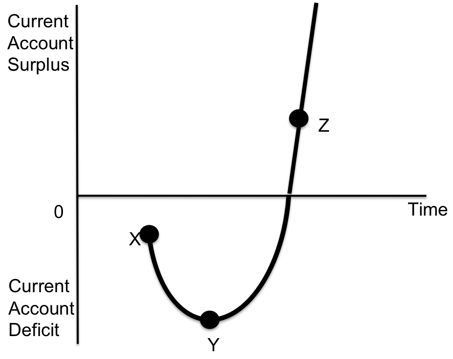

IB Docs (2) Team
IB Docs (2) Team

The Marshall-Lerner condition / J curve (HL only)
Introduction
This lesson looks at why a competitive devaluation may not solve a long term current account deficit. Despite this argument there are a number of governments around the world who implement a cheap currency policy as a way of making their domestic goods and services more competitive in overseas markets. This lesson also compares the relationship between PED and the current account.
Enquiry question
Why might a competitive devaluation may solve a long term current account deficit. What is the relationship between PED for a nation's traded products and the current account?
Lesson time: 80 minutes
Lesson objectives:
State the Marshall-Lerner condition and apply the condition to the effect of devaluation / depreciation on the current account. (HL only)
Explain the J-curve effect, with reference to the Marshall- Lerner condition. (HL only)
Teacher notes:
1. Beginning activity - begin with the opening video and then discuss this as a class. (Allow 5 minutes in total)
2. Processes - technical vocabulary - the students can learn the background information from the videos, activities 1 - 6 and the list of key terms. (40 minutes)
3. Developing the theory - activity 7 contains a relevant discussion topic. (10 minutes)
4. Apply the theory - activities 8 and 9 focuses on the UK, a nation whose currency has depreciated, but has not enjoyed a significant improvement in its current account balance. (15 minutes)
5. Link to the assessment - activity 10 consists of a paper two type (a - c) questions on this topic. (10 minutes)
Key terms:
Marshall - Lerner condition - the condition that an exchange rate devaluation or depreciation will only cause a balance of trade improvement if the absolute sum of the long-term export and import demand elasticities is greater than unity. The condition states that a country will only benefit from a competitive devaluation if the PED of exports + PED of imports is greater than 1 (i.e PED elastic).
J curve - the time path of a country's trade balance following a devaluation or depreciation of its currency, under a certain set of assumptions.
The activities on this page are available as a class handout at:  Marshall-Lerner condition / J curve
Marshall-Lerner condition / J curve
Beginning exercise
Some governments believe that a devaluation of a nation's currency will lead, after a short period of time, to an improvement in the current account - at least until the impact of inflation withers away at this advantage. However the following short video, from a Singaporean IB student explains why this may not always be the case. After watching the short video complete the work point which follows:
Why might a devaluation of the Singaporean $ not improve the nation's trading position?
Hint:
The short presentation clearly states that many of the goods that Singapore imports consist of raw materials and essential items such as food and energy. These goods are likely to be price inelastic. This means that should the Singapore $ reduce in value then they will have to pay more Singapore $s for those items. Because these items are essentials the country will still be required to import them in roughly the same quantity as before - thus worsening their current account, not improving it.
Activity 1: The relationship between PED and the current account - Marshall-Lerner condition
| Country | PED of exports | PED of imports | Total PED | Impact of a 10% devaluation on volume of exports | Impact of a 10% devaluation on the volume of imports | Total Impact on the current account |
| A | 0.3 | 0.2 | 0.5 | 3% rise | 2% fall | will worsen because the 5% rise in traded goods < 10% devaluation |
| B | 0.7 | 0.8 | 1.5 | 7% rise | 8 % fall | will improve because the 15% rise in traded goods >10% devaluation |
| C | 0.5 | 0.5 | 1 | 5% rise | 5 % fall | will be unaffected by the devaluation |
To calculate this you need to multiple the size of the devaluation (10%) by the PED (0.7)
Activity 2: Practise activities
The table includes the volume of exports and imports between two trading nations - Saudi Arabia and Japan. Japan exports a range of luxury and high technology goods while Saudi Arabia exports oil. Oil has a PED of 0.2, while Japanese electronics have a PED of 1.5. Both nations import a diverse range of products with a combined PED of 0.3.
$1 currently buys 100 Japanese Yen and 3.75 SR
(a) Complete the following table:
| Value of exports in (B $) | Value of imports in (B$) | Value of exports in local currency (Bs) | Value of imports in local currency (Bs) | Current account balance in (local currency) | |
| Japan | 100 | 150 | 10,000 Y | 15,000 Y | (5,000 Y) |
| Saudi Arabia | 100 | 150 | 375 SR | 562 SR | (187 SR) |
(b) Both nations devalue their currency by 10%. The Japanese Yen now trades for 110 Y to the US $ where as a $ now buys 4.13 Saudi Riyal. Complete the table to illustrate the change that the devaluation has had on both nations.
| Value of exports in local currency (Bs) | Value of imports in local currency (Bs) | Current account balance in local currency (Bs) | |
| Japan | 15% rise (10% devaluation x PED value of 1.5 = 15% rise) | 3% rise (10% devaluation x PED value of 0.3 = 3% rise) | PEDx+PEDm is 1.8 so net exports increases by 8% if devaluation is 10% |
| Saudi Arabia | 2% rise (10% devaluation x PED value of 0.2 = 2% rise) | 3% rise (10% devaluation x PED value of 0.3 = 3% rise) | PEDx+PEDm is 0.5 so net exports falls by 5% if devaluation is 10% |
(c) Explain the effect of the devaluation on the current account of both Japan and Saudi Arabia.
Trading PED luxury goods means that while the volume of foreign currency fell per item sold, the elasticity of Japanese exports means that the rise in the volume of sales has more than compensated for this. This follows the normal rule of PED elasticity where by the % change in demand is greater than the % fall in price.
The opposite however, is true for KSA. Oil sales did increase following their devaluation, but by a smaller % than the fall in currency price, leaving their current account in worse shape than before.
Activity 3
1. Exports from Malaysia are known to have a PED of 0.5 while their imports are more price elastic with a PED of 1. They devalue the Malaysian Ringgit, from 4R = 1$ to 5R = 1$, to improve their current account deficit. This is shown as follows:
| Malaysia Rs relative to the US $ | Value of exports in R | Value of imports in R | Current account in local currency |
| 4 R $ = 1 US $ | 400 m | 600 m | (200 m) |
| 5 R = 1 US $ | 450 m | 600 m (25% devaluation x PED value of 1 = 25% rise) | (150 m) |
(a) Complete the table by completing the missing blanks.
(b) Explain using PED theory why the Malaysian central bank managed to reduce its current account deficit by devaluing its currency?
Based on the Marshall-Lerner condition the combined PED of exports and imports is 1.5. Therefore a 25% fall in the value of the currency will lead to a greater than proportional change in the quantity demanded of exported and imported goods.
Activity 4
Traded goods from Singapore are less price elastic than Malaysia. From previous experience the Singapore government knows that their exports are known to have a PED of 0.3 while their imports are more price elastic with a PED of 0.2. They devalue the Singapore $ to try and improve their current account deficit. This is shown as follows:
Singapore $s relative to the US $ | Value of exports in S $ | Value of exports in US $ | Value of imports in US $ | Value of imports in S $ | Current account in US $ |
2 S $ = 1 US $ | 200 m | 100 m | 125 m | 250 m | (25 m) |
2.5 S $ = 1 US $ | 215 m | 86 m | 119 m | 297.5 m | (33 m) i.e. the current account has worsened by $ 7m |
(a) Complete the table by completing the missing blanks.
(b) Why has the Singapore government not managed to reduce its current account deficit by devaluing it currency?
Because the combined PED elasticities of both imports and exports is lower than 1.
Activity 5
The following table represents the PED elasticities of traded products for the nations in the G7:
| SR elasticity of imports | SR elasticity of exports | LR elasticity of imports | LR elasticity of exports | |
| Canada | - 0.1 | - 0.5 | - 0.9 | - 0.9 |
| France | - 0.1 | - 0.1 | - 0.4 | - 0.2 |
| Germany | - 0.2 | - 0.1 | - 0.06 | - 0.3 |
| Italy | - 0 | - 0.3 | - 0.4 | - 0.9 |
| Japan | - 0.1 | - 0.5 | - 0.3 | - 1.0 |
| United Kingdom | - 0 | - 0.2 | - 0.6 | - 1.6 |
| United States | - 0.6 | - 0.5 | - 0.3 | - 1.5 |
Which of the following nations are likely to benefit from a deprecation in the value of their national currency?
- in the short term
- in the long term.
In the short term only the USA is likely to benefit from a devaluation as the combined PED elasticity of their traded products is equal to 1.1.
In the long term Canada, Italy, Japan, UK and USA are likely to see a benefit - at least until inflation erodes the advantages gained from a weaker currency.
Activity 6: The J curve
Watch the following short presentation and then complete the activity.

(a) According to J curve theory, why does the current account fall further into deficit between points X and Y?A nation devalues at point X and initially when the currency is devalued, the nation's goods and services fall in price but it makes little difference to the volume of products sold overseas. Neither is their much change in the volume of overseas goods and services sold either. This is because domestic stores still have stock remaining unsold, which the wholesaler purchased at the existing exchange rate. Similarly shops overseas still have a stock of the nation's goods, purchased at the previous (higher) exchange rate. This means that in the short term, between points X and Y on the J curve, the fall in price of Turkish products will be greater than the change in demand.
(b) Why according to J curve theory does the current account improve between points Y and Z?
As the old stock is sold and new stock is purchased at the lower exchange rate, the nation's products gain in competitiveness. Customers (both domestically and in export markets) actively choose to purchase the nation's products and at point Y the combined elasticity of exports + imports rises above 1. At this point the current account improves and this point is represented by point Z on the diagram.
(c) Explain the likely change in the nation's current account beyond point Z.
Over time the nation will experience cost push inflationary, as the lower valued currency increases production costs and over time, we would expect the nation's current account to come under pressure once again.
Activity 7
In August 2015, Ruchir Sharma of Morgan Stanley warned that a number of governments were adopting a policy of 'competitive devaluations', which in turn could trigger a real recession'.
1. Why do some governments deliberately devalue their currency?
A competitive devaluation (deliberately reducing the value of the national currency) is a way of improving the international competitiveness of a country. Reducing the price of a currency will make the products produced in their country relatively cheaper. The Marshall-Lerner condition states that if the combined PED of exports and imports is greater than 1 then this will improve the country's current account in the short term.
However a cheaper currency price will increase cost push inflation in the economy and over time this will erode the advantage caused by the competitive devaluation.
2. Why might a series of competitive devaluations trigger a global recession?
The global recession of 2008 was made much worse because of a series of competitive devaluations, by a range of different central banks. One central bank after another devalued their currency in an attempt to increase exports and cut imports.
However, as each country reduced its imports this also reduced world export levels as well. This is because on a world level exports and imports must be equal. One countries current account surplus is anothers deficit. Therefore reduced imports meant reduced exports too, and, hence, reduced economic activity. The competitive devaluations drove economies further and further into a vicious spiral.
Activity 8: A focus on Turkey
The national currency of Turkey, the Turkish lira has, over a five year period, been one of the worst performing currencies. During this same period the current account deficit has barely improved. This is represented by the following table:
| Year | Value of TL relative to US$ | Current account deficit billion $ |
| 2015 | 2.41 | $ 32.1 |
| 2016 | 2.9 | $ 32.6 |
| 2017 | 3.7 | $ 47.1 |
| 2018 | 4.6 | $ 22.0 |
| 2019 | 5.7 | $ 6.76 (surplus) |
| 2020 | 7.5 | $ 36.7 |
| 2021 | 17.2 | $0.05 (surplus) |
| 2022 | 19.5 | $ 39.45 |
| 2023 | 27.96 | $ 45.09 |
Figures accessed from www.tradingeconomics.com
Why might Turkey's trade deficit have remained high despite a significant depreciation during this period?
The most likely explanation is that the sharp fall in currency will have contributed to high rates of inflation in the country, eroding some of the advantages gained from a cheaper currency. During 2022-2023 the nation will have also been significantly impacted by higher food and energy prices following the Covid pandemic, with the nation an importer of both commodities. This, in turn, might mean that Turkey's current deficit may have been higher still but for the sharp devaluation that took place.
Activity 9: A focus on the UK
The UK’s trade deficit in goods widened unexpectedly to £12.7 billion in September, with the weakness in the pound not yet providing a boost for exports.
The deficit in goods rose from £11.1 billion in August and was much worse than economists had expected. Imports increased by £1.3 billion to a record £38.8 billion, driven by ships, cars and oil.
The biggest factor was the deficit with the European Union, which rose to a monthly record of £8.7 billion in September. There was 5 per cent jump in imports from the EU, against the 1.1 per cent increase in exports.
The total deficit in goods and services widened by £1.5 billion to £5.2 billion between August and September.
The original article can be accessed at:  Original article
Original article
| Time period | Trade balance bn |
| January - June 2016 | (£ 25,985) |
| After the referendum and £ depreciation | |
| July - December 2016 | (£ 25,410) |
| 2017 | (£ 19,822) |
| 2018 | (£ 23,700) |
Questions:
To what extent does the above data for the UK support the J curve theory?
Use the Marshall-Lerner condition to explain why has the UK not seen a more significant improvement in its current account following a 17% devaluation?
It would appear to support the theory. Firstly according to J curve theory a cheaper national currency will have had little initial impact on the volume of goods and services traded. This is because shops in the UK would still have held stock remaining unsold which the wholesaler purchased at an existing exchange rate. Similarly shops overseas would still have had supplies of UK goods, purchased at the previous (higher) exchange rate. This might explain the rise in the current account deficit in the three months following the depreciation.
Only once new stock was purchased and consumers had to time to adjust to new prices would the impact of a cheaper £ be likely to have any direct impact on the UK's trading position. This might have been evident during the following 9 months, when the UK's current account deficit improved, albeit very slightly - significantly less than the 17% devaluation.
Why has the UK not seen a greater improvement in its current account?
One obvious reason is that the UK tends to trade in goods and services with low PED elasticity, in the short term, particularly energy and raw materials. This is supported by the following table which shows that Britain's traded goods are highly inelastic in the short term while significantly more PED elastic in the long term.
| SR elasticity of imports | SR elasticity of exports | LR elasticity of imports | LR elasticity of exports | |
| United Kingdom | - 0 | - 0.2 | - 0.6 | - 1.6 |
In the long run, if the table above is to believed, the UK may eventually see a 27% rise in export volumes to match the 17% fall in currency value and a 10% fall in imports, again in the long term. In the short run, however, the PED of Britain's trade products is virtually zero. This means that the UK was always unlikely to see any significant change in the current account after just three months, as the article and current account figures testified.
Activity 10: Link to the assessment - short paper two questions
(a) Use the Marshall-Lerner condition to explain how a change in exchange rates impacts on a nation's current account. [4 marks]
According to the Marshall-Lerner condition, if the combined PED elasticity of a nation's exports and imports is less than one i.e. PED inelastic then a devaluation will not improve the current account. This is because the change in demand for exports / imported products will be proportionately lower than the size of the devaluation (the change in price of the currency).
However, in circumstances where the combined PED elasticity of imports and exports is greater than 1 (PED elastic) then the current account will improve, because the change in demand for exports / imported products will be proportionately greater than the size of the devaluation (the change in price of the currency).
(b) Illustrate using a J curve why a currency devaluation might not be effective in improving a nation's current account. [4 marks]
As the J curve illustrates, following a devaluation of any currency there will initially be little or no little change in the quantity demanded for domestic goods and services as the changing market conditions take time to have an impact on consumption. For example, shops are already well stocked with produce purchased at the previous exchange rate.
At point Y, however, providing the combined PED elasticity of imports and exports is greater than 1 the current account deficit will start to fall and may even go into surplus at point Z.
However, this improvement in competitiveness will erode over time due to rises in cost push inflation, making the nation's traded goods and services less competitive and cancelling out any advantage gained.
 Twitter
Twitter
 Facebook
Facebook
 LinkedIn
LinkedIn